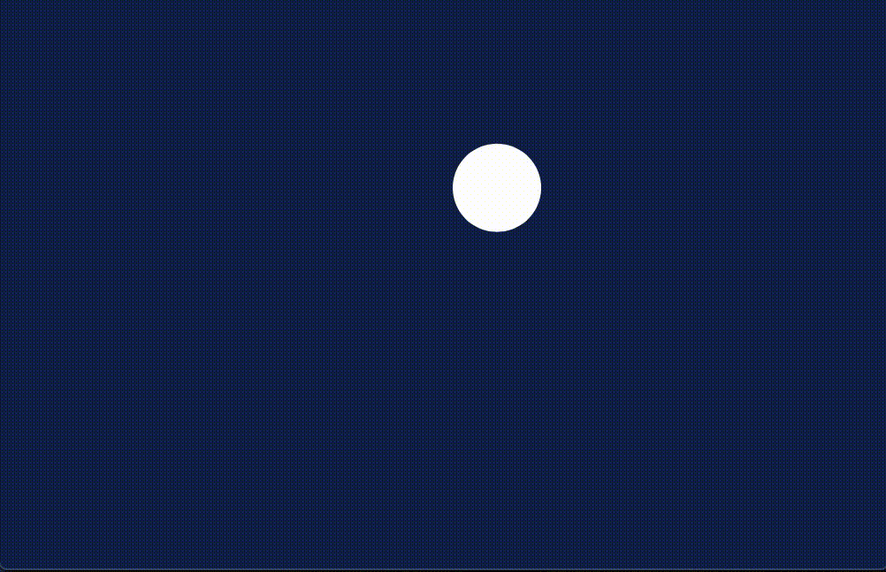

webpackを利用してp5.jsの開発環境を作り、ボールが弾むプログラムを作成する。
動機
ふとしたきっかけで久々にp5.jsを触りたくなった。
昔使っていたときは、p5.jsのファイルをダウンロードしてscriptタグに直接指定することで書いていた。しかし最近、Vue.jsのガイドを読んでいてwebpackの存在を知った。名前は知っていたのだが、具体的に何をするためのものなのかはよく分かっていなかったので調べた。
webpackとは
以下、個人的に調べた限りの理解を書く。
Conceptによれば、webpackとは"module bundler"の一種。bundleという意味から、「複数のモジュールを一つに束ねるツール」だと予想できる。JSのプログラムを、モジュールとして複数の単位に分割して開発する。それを一つのファイルにまとめ上げてくれるのがwebpack。
例えばp5.jsで、ボールが弾むだけのプログラムを書こう、と思った場合、
- ボールを管理するモジュールを
Ball.jsに書く
- スケッチを管理するモジュールを
sketch.jsに書く
- メインの処理を
index.jsに書く
みたいにモジュールを分けられる。
ただし、モジュールを扱うための機能であるimport/export文はES2015の仕様で標準採用され、多くのブラウザで実装されている。じゃあwebpackの他の強みは何かというと、おそらく「JS以外のファイルもまとめてくれる点」だと思う。例えばcssやsassのファイルもJSに埋め込むことができる。TypeScriptやJSXのファイルもwebpackでまとめられる。ただしwebpackの核の機能はあくまでJSのモジュールをまとめることなので、JS以外のファイルはloaderと呼ばれる変換器を通しておく必要がある。とはいえ、「このファイルはこのloaderに通してね」というのをあらかじめ設定ファイルに書いておけば、少ないコマンドで変換からbundleまでやってくれるので、便利である。
今回はp5.jsの開発環境づくりのためにwebpackを用意するのだが、JSのモジュールしか扱うつもりはない。なのでwebpackの恩恵は少ないかもしれない。しかし練習として使ってみる。
webpackの導入と動作確認
まず適当にプロジェクト用のディレクトリを作る。npmでプロジェクトを初期化する。
$ mkdir p5-sandbox
$ cd p5-sandbox
$ npm init -y
以下、このプロジェクトのルートディレクトリを/で表す。
webpack本体を入れる。webpackをコマンドラインから実行するためにはwebpack-cliが必要なので、それも入れる。個人で使う分にはどうでもよいと思うが、これらは開発のみに利用されるパッケージなので、--save-devをつけておく。
$ npm install webpack webpack-cli --save-dev
ディレクトリの作成
今回は次のようにする。
- ソースコードは
/src/index.jsに書く。
- bundle後のファイルは
/public/js/bundle.jsとして出力されるようにする。
あらかじめディレクトリを作成しておく。
$ mkdir src
$ mkdir -p public/js
index.jsの作成
/src/index.jsを作成。動作確認のため適当に書く。
console.log("Hello, World");
webpackの設定
/webpack.config.jsを作成する。
const path = require('path');
module.exports = {
mode: 'development',
entry: './src/index.js',
output: {
filename: 'bundle.js',
path: path.resolve(__dirname, 'public/js')
}
}
説明
module.exportsの中に色々設定項目を書いていく。基本的なことはConfigurationに載っている。
- mode: webpackのモードを設定。
development/production/noneが設定できる。モードよっていくつかの設定項目が自動でセットされるみたい。
- enrty: どのJSファイルをbundleするかをここに書く。
- output: 出力先ファイルを設定。
- filename: 出力先ファイル名
- path: 出力先ファイルのパス。絶対パスである必要があるため、
path.resolveで相対パスを絶対パスに変換する。__dirnameはnode.jsが初めから持っている変数で、現在のディレクトリのパスが入っている。
bundleする
次のコマンドを実行すると、webpack.config.jsの設定をもとに、/public/js/bundle.jsが作成される。-pオプションを指定すると、改行やスペースを取り払って出力ファイルのサイズを小さくしてくれる。
$ npx webpack -p
nodeで実行できることが確認できる。
$ node public/js/bundle.js
Hello, World
webpack-dev-serverの導入と動作確認
ローカルWebサーバーを動かすために、webpack-dev-serverを使ってみる。npmでインストールする。
$ npm install webpack-dev-server --save-dev
設定
webpack.config.jsのmodule.exportsにdevServerプロパティを追記する。
module.exports = {
...
devServer: {
contentBase: path.resolve(__dirname, 'public'),
publicPath: "/js/"
}
}
説明
DevServerに詳しいことが載っている。
- contentBase: サーバのルートを決める。ドキュメントによると絶対パスが推奨されているみたいなので、
path.resolveを使って書く。
- publicPath: bundleされたJSファイルがどこに置かれるのかを、dev-serverに教える。
contentBaseが/public、publicPathが/js/なので、/public/js/にbundleされたファイルが置かれる。
起動
次のコマンドで実行できる。デフォルトはhttp://localhost:8080のようだ。
$ npx webpack-dev-server
(i) ｢wds｣: Project is running at http://localhost:8080/
(i) ｢wds｣: webpack output is served from /js/
...
webpack-dev-serverにはlive reloading機能が付いている。なのでindex.jsを変更すると、自動でbundleが行われ、ページがリロードされる。
コマンドの別名を追加する
/package.jsonを編集する。scriptプロパティにbuildとstartの2項目を追加。
{
...
"scripts": {
"test": "echo \"Error: no test specified\" && exit 1",
"build": "webpack -p",
"start": "webpack-dev-server"
},
...
}
このようにすると、以下のコマンドでwebpack -pが実行される。
$ npm run build
以下のコマンドでwebpack-dev-serverが実行される。
$ npm start
p5.jsの導入と動作確認
次のコマンドでp5.jsをイントールする。
$ npm install p5
試しに円を書いてみる。
/src/index.jsを以下のようにする。
p5.jsがモジュールである都合上、p5.jsはinstance modeで用いる必要がある。また、p5.jsのキャンバスに余白が空くため、body要素のmarginを0にしている。
import p5 from 'p5';
import { sketch } from './sketch.js';
document.body.style.margin = "0";
const app = new p5(sketch, document.body);
/src/sketch.jsを作成し、内容を以下のようにする。
export const sketch = (p) => {
p.setup = () => {
p.createCanvas(p.windowWidth, p.windowHeight);
}
p.draw = () => {
p.background('#0f2350');
p.noStroke();
p.fill(255);
p.ellipse(p.windowWidth/2, p.windowHeight/2, 50, 50);
}
};
index.jsではsketch.jsのsketchをimportしていることに注目。また、sketch.jsではsketchという変数をexportしていることに注目。webpackではこの情報をもとに、2つのファイルをまとめてbundle.jsに変換する。またp5は./という相対パス表現を用いずにimportしている。このように書くと、/node_modules/にあるパッケージを参照する(これはresolve.moduleのデフォルト値として設定されている)。
ブラウザ上では以下のように表示される。
弾むボールの作成
書き方の基本はThe Nature of Codeが参考になる。ただしコードはProcessingで書かれているので、うまく読み替える。
sketch.js
/src/sketch.jsを以下のようにする。
setupにて、Ballのインスタンスを作成。引数は(p, 位置ベクトル, 速度ベクトル, 直径)の順に指定する。Ballの実装は次の項で行う。
drawにて、ball.applyForceで重力を加え、ball.runで位置、速度の更新、画面描画を行う。
import { Ball } from './Ball';
export const sketch = (p) => {
let ball;
p.setup = () => {
p.createCanvas(p.windowWidth, p.windowHeight);
ball = new Ball(
p,
p.createVector(p.windowWidth/2, p.windowHeight/2),
p.createVector(10, -20),
50,
10
);
}
p.draw = () => {
p.background('#0f2350');
ball.applyForce(p.createVector(0, 9.8));
ball.run();
}
};
Ball.js
上のコードが動くように、/src/Ball.jsを作成する。
run: updateとdisplayを呼び出す。update: 位置、速度を更新する。加速度は0に初期化する。collide: 壁との当たり判定をする。衝突したら位置を補正し、速度の向きを逆にする。非弾性衝突を仮定し、速度の大きさを減衰させる。display: ボールを描画する。applyForce: 外力を加える。運動方程式を満たすように、力÷質量を加速度として加える。
import p5 from 'p5';
export class Ball {
constructor(p, location, velocity, diameter, mass) {
this.p = p;
this.r = location;
this.v = velocity;
this.d = diameter;
this.a = p.createVector(0, 0);
this.m = mass;
}
run() {
this.update();
this.display();
}
update() {
this.v.add(this.a);
this.r.add(this.v);
this.a.mult(0);
this.collide();
}
collide() {
const [x, y] = [this.r.x, this.r.y];
const r = this.d / 2;
const [w, h] = [this.p.windowWidth, this.p.windowHeight];
const decay = 0.9;
if (x - r < 0) {
this.v.x *= -decay;
this.r.x = r;
}
if(w < x + r) {
this.v.x *= -decay;
this.r.x = w - r;
}
if (y - r < 0) {
this.v.y *= -decay;
this.r.y = r;
}
if (h < y + r) {
this.v.y *= -decay;
this.r.y = h - r;
}
}
applyForce(f) {
let a = p5.Vector.div(f, this.m);
this.a.add(a);
}
display() {
const p = this.p;
p.noStroke();
p.fill(255);
p.ellipse(this.r.x, this.r.y, 50, 50);
}
}
こんな感じになる。

ちなみにこの状態でnpm run buildを行うと、ファイルサイズが大きすぎる旨の警告が出る。警告をを消すにはファイル分割などの設定をする必要があるが、これについてはまたいつか調べる。今回はここまで。
参考